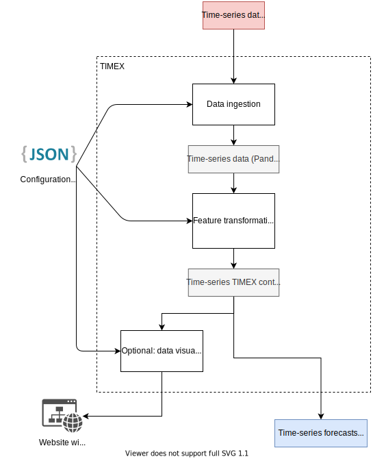

Package timexseries
TIMEX (referred as timexseries in code) is a Python package which implements a pipeline for time-series forecasting.
The pipeline consists in:
- time-series data ingestion;
- time-series pre-processing;
- time-series analysis and prediction;
- results visualization.
While TIMEX is intended to be use in a fully automatic way (which means that each
step is automatically computed, without user intervention), users can also take
advantage of single parts of the framework.
Reason
Time-series are one of the most important data shapes. An important part of data that we produce and consume everyday can be encoded in the time-series form.
For our purposes, time-series are an ordered list of values, each one associated with a timestamp. The values can be the number of units sold that day of a specific product, the heartbeat of a person, the amount of new Covid-19 cases in a specific country or city.
The possibility to forecast the values of a time-series using past available data can be incredibly useful in allocating resources, adopt countermeasures for a problem, plan the buying of a specific stock, etc.
A lot of prediction models exists, which can work on time-series data. Probably the most known one is ARIMA, but in recent years also Machine and Deep Learning (ML / DL) models have been proposed.
However, the pipeline of a forecasting process is not easy and requires specific skills. Time-series have to be parsed from a data source, then pre-processed in order to fix eventual non-stationarities of missing values; at this point, the predictions models have to be created, trained, and used for the forecasting. The results, which are usually in a machine readable format (e.g. a Pandas DataFrame in Python) have to be processed in order to be suitable for persons who may not have data science experience.
TIMEX's goal is to provide an easy to use, as-automated-as-possible platform to create forecasting pipelines and, if wanted, also a website already filled with the forecasts and all the associated measures.
Use cases
There are at least two use cases worth mentioning:
- A certain time-series (or a group of time-series) is relevant for a group of users. The time-series are updated every
day and can be downloaded in a suitable format (e.g. CSV or XLSX) every day.
Those users would like to have a way to have daily forecasts of such time-series. This exactly what happens with weather forecasts. Bob is assigned the task to give the users what they want; for them a website where forecasts can be consulted is ok. Alternatively, they would like to receive an e-mail every morning with the latest forecasts. Bob can install TIMEX on a server, configure the bare minimum requested by TIMEX, and start it. A website will be made available, and Bob can give the link to the users. - A company is interested in creating a forecast-as-a-service platform where users can upload a CSV file containing some time-series, set some settings or use defaults, and press a button to receive forecasts for the uploaded time-series. TIMEX can be adapted to work this way.
Get started
Refer to the Examples section of the GitHub repository, or check the source code of covid-timex.it.
Architecture
The general architecture of TIMEX is here presented:

The most important aspect of TIMEX architecture is the configuration options dictionary. It is a key-value list of settings which influences all the key aspects of the pipeline. It can be stored in a JSON file, loaded before the pipeline starts.
Configuration parameters dictionary
An example of working dictionary, used for the covid-timex.it website is:
{
"activity_title": "Covid-19 Italy Analysis",
"verbose": "INFO",
"input_parameters": {
"source_data_url": "https://raw.githubusercontent.com/pcm-dpc/COVID-19/master/dati-andamento-nazionale/dpc-covid19-ita-andamento-nazionale.csv",
"columns_to_load_from_url": "data,nuovi_positivi,totale_positivi,variazione_totale_positivi,terapia_intensiva,totale_ospedalizzati,deceduti,tamponi",
"datetime_column_name": "data",
"index_column_name": "data",
"add_diff_column": "terapia_intensiva,totale_ospedalizzati,deceduti,tamponi",
"timeseries_names":
{
"data": "Date",
"nuovi_positivi": "Daily cases",
"totale_positivi": "Total positives",
"variazione_totale_positivi": "Total positives variation",
"terapia_intensiva": "Total intensive care",
"totale_ospedalizzati": "Total hospitalized",
"deceduti": "Total deaths",
"tamponi": "Tests",
"terapia_intensiva_diff": "Daily intensive care",
"totale_ospedalizzati_diff": "Daily hospitalized",
"deceduti_diff": "Daily deaths",
"tamponi_diff": "Daily tests"
}
},
"selection_parameters": {
"init_datetime": "2020-01-01T17:00:00",
"end_datetime": "2023-01-22T17:00:00"
},
"model_parameters": {
"test_values": 5,
"delta_training_percentage": 10,
"prediction_lags": 10,
"possible_transformations" : "none,log_modified",
"models": "fbprophet,exponentialsmoothing",
"main_accuracy_estimator": "mae"
},
"xcorr_parameters": {
"xcorr_max_lags": 120,
"xcorr_extra_regressor_threshold": 0.8,
"xcorr_mode": "pearson",
"xcorr_mode_target": "pearson"
},
"historical_prediction_parameters": {
"initial_index": "2020-08-18",
"save_path": "historical_predictions_italy_covid.pkl"
},
"visualization_parameters": {
"language": "en",
"xcorr_graph_threshold": 0.8
}
}
All the options are here described.
General
activity_title: used in the website creation as title for the page. Optional.verbose: it is not strictly used by TIMEX, but it can be included here in order to set the verbosity level in the main Python script. In fact, TIMEX has important logging capabilities. Optional, can be one of "DEBUG", "INFO", "WARNING", "ERROR", "CRITICAL".max_threads: set the max number of threads (processes) used by TIMEX during the forecasting models computation. Optional, if not set TIMEX will try to understand the number of available cores on the system.
Input parameters
Remember that TIMEX expects the input data to be in the following form. Some changes can be forced through settings.
| time_index | time-series A | time-series B | … |
|---|---|---|---|
| 2000-01-01 | x | x | … |
| 2000-01-02 | x | x | … |
| … | … | … | … |
The following options has to be specified:
source_data_url: local or remote URL pointing to a CSV file.
Additionally, some other parameters can be specified:
index_column_name: the name of the column to use as index for the DataFrame. If not specified the first one will be used. This column's values will be parsed with dateparser to obtain a DateTimeIndex;frequency: if specified, the corresponding frequency will be forced. Refer to https://pandas.pydata.org/pandas-docs/stable/user_guide/timeseries.html#offset-aliases for a list of possible values. If not specified the frequency will be infered.columns_to_load_from_url: comma-separated string of columns's names which will be read from the CSV file. If not specified, all columns will be read;add_diff_column: comma-separated string of columns's names for which a corresponding column containing the diff values should be created. They will be created with the namecol_name_diff. Note that the first row of the dataset will be discarded;timeseries_names: dictionary of key-values (old_name: new_name) used to rename some columns in the CSV;dateparser_options: dictionary of key-values which will be given todateparser.parse(). This is useful to set the date format if it is not common. Refer todateparserdocumentation for the available options.
Selection parameters
These parameters can be used to filter some points in the dataset. This is optional.
column_name_selection: if specified, only the rows in which the value of the column namedcolumn_name_selectionis equal tovalue_selectionare kept. If this is specified, alsovalue_selectionhas to be specified.init_datetime: if specified, only the rows where the Datetimeindex value is greater thaninit_datetimeare kept.end_datetime: if specified, only the rows where the Datetimeindex value is less thanend_datetimeare kept.
Moreover, if dateparser_options is specified in `input_parameters', then the options will be passed to
dateparser to parse the dates.
Model parameters
These parameters control the classes of models used in the forecasting, the feature transformation tested, etc.
The following options has to be specified:
possible_transformations: comma-separated list of transformations keywords. Check the available transformations. Example:"none,log_modified".main_accuracy_estimator: error metric which will be minimized as target by the procedure. It can be one of"mae","mse".models: comma-separated list of the models to use. Check the available models. Example:"fbprophet,exponential_smoothing".
Moreover, some other options can be set. Otherwise default values will be used:
- test_values: number of points used as validation in order to choose the transformation and training window. These
points will be used, however, to compute the actual forecast. Has precedence over test_percentage.
- test_percentage: Percentage of the time-series length to used for the validation set.
- prediction_lags: Number of future lags for for the forecast.
- delta_training_percentage: Length, in percentage of the time-series length, of the training windows.
- min_values: Key-values dictioanry where key is the name of a column and value is the minimum expected value in that
column. If "_all" is in the dict the corresponding value will be used for all values in each column.
- max_values: Key-values where key is the name of a column and value is the maximum expected value in that column.
If "_all" is in the dict the corresponding value will be used for all values in each column.
- round_to_integer: List of columns name which should be rounded to integer. If "_all" is in the list, all values in
every column will be rounded to integer.
Cross-correlation parameters
These parameters controls the cross-correlation computation, which is used to determine if there are time-series useful as extra-regressors for multivariate multiple-input-single-output forecasting models. This part is optional.
-
xcorr_modes: indicate the different algorithms which should be used to compute the cross-correlation. The computed cross-correlation will be shown in the data visualization part. The available choices are: -
matlab_normalized: same as using the MatLab function xcorr(x, y, 'normalized') pearson: use Pearson formula (NaN values are fillled to 0)kendall: use Kendall formula (NaN values are filled to 0)-
spearman: use Spearman formula (NaN values are filled to 0) -
xcorr_max_lagsis the number of lags, both in positive and negative direction, to which the cross-correlation calculations should be limited to. xcorr_mode_target: which cross-correlation algorithm should be used as target in evaluating useful additional regressors. E.g."pearson".xcorr_extra_regressor_threshold: the minimum absolute value of cross-correlation which indicates a useful extra-regressor. E.g. 0.8.
Additional regressors parameters
These are additional regressors, which can be used in multivariate multiple-input-single-output forecasting models for which the future values are already known at the forecasting time. For example, if we have weather forecast for the next two weeks and we think that the temperature influences the target time-series, we can feed it in TIMEX. This is optional.
The additional regressors should be put in a CSV file, in the form:
| time_index | additional regressor A | additional regressor B | … |
|---|---|---|---|
| 2000-01-01 | x | x | … |
| 2000-01-02 | x | x | … |
| … | … | … | … |
And the following options has to be specified:
additional_regressors: Key-value dict where key is a column name, and value is the path of the CSV containing the additional regressors useful for that series. If some additional regressors may be useful for all the time-series in the dataset, we can specify them using the "_all" key. Example:
"additional_regressors": {
"_all": "../datasets/AdditionalRegressors/Temperature.csv",
"time-series A": "../datasets/AdditionalRegressors/RegressorUsefulForTimeSeriesA.csv"
}
Visualization parameters
Parameters used to tune the visualization part of TIMEX.
language: Can be one between"en"and"it". TIMEX for now supports English and Italian.xcorr_graph_threshold: This controls the minumum value of cross-correlation for which an arc in the cross-correlation graph is drawn. It should be between 0.0 and 1.0.
Available forecasting models
The following models are implemented in TIMEX and can be used in the forecasting procedure:
- Facebook Prophet: This is the Facebook Prophet forecasting model. Keyword:
fbprophet. - LSTM: A simple LSTM implementation built with PyTorch. Keyword:
lstm. - Exponential Smoothing: An exponential smoothing model, with automatic choice of trend and seasonality period, built on
top of sklearn. Keyword:
exponentialsmoothing. - ARIMA: Simple ARIMA model, with automatic tuning. Keyword:
arima.
Available transformations
The following transformations are available on TIMEX, which will use them in order to pre-process the time-series and check if this increases the forecasting performance on the validation set.
- Identity: don't modify the values. Keyword:
none. - Logarithmic: Simple logarithmic function, with support for negative values. It uses the formula:
f(x) = sign(x) * log(|x|)
if
x> 1, 0 otherwise. However, the modified logarithmic one should be preferred. Keyword:log. - Modified logarithmic: Simple logarithmic function, adapted to work on all the real numbers. It uses the formula:
f(x) = sign(x) * log(|x| + 1)
Keyword:
log_modified. - Yeo-Johnson: transformation presented in this paper.
Keyword:
yeo-johnson
Expand source code
"""
.. include:: ./documentation.md
"""Sub-modules
timexseries.data_ingestiontimexseries.data_predictiontimexseries.data_visualizationtimexseries.timeseries_container